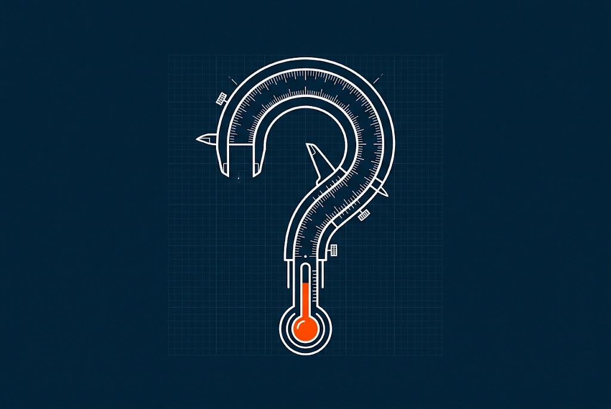
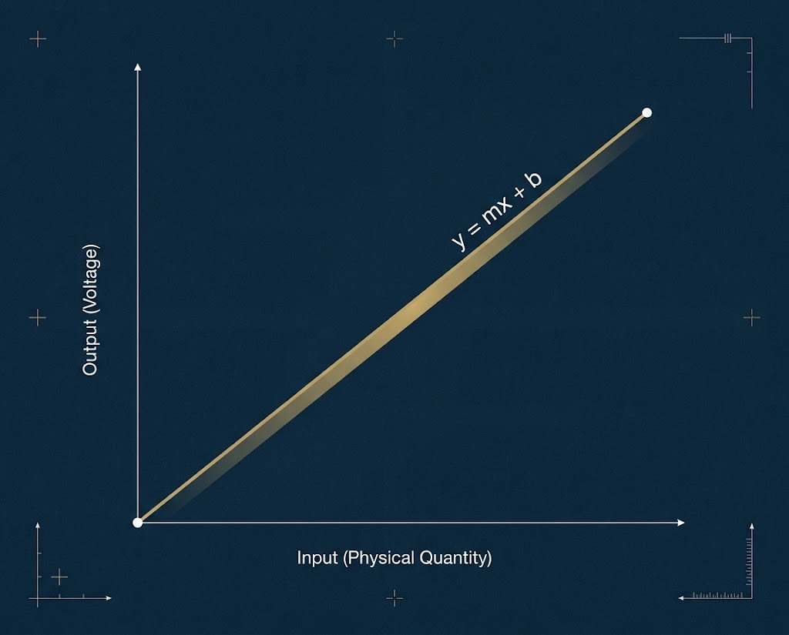
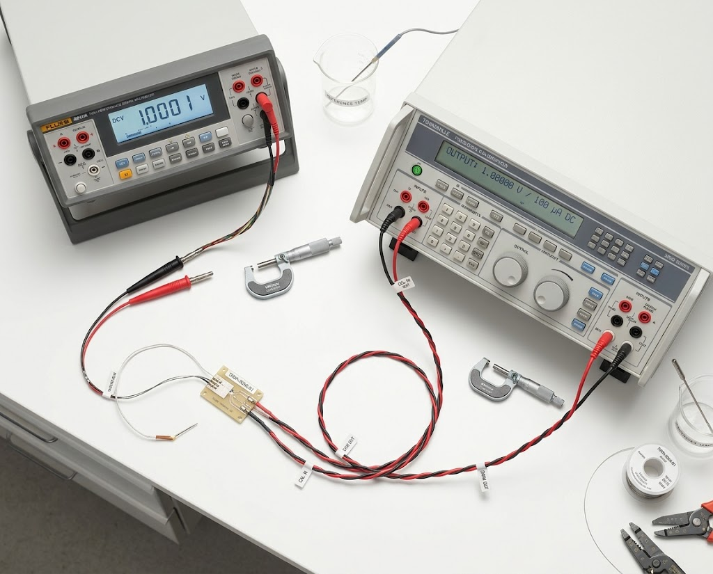
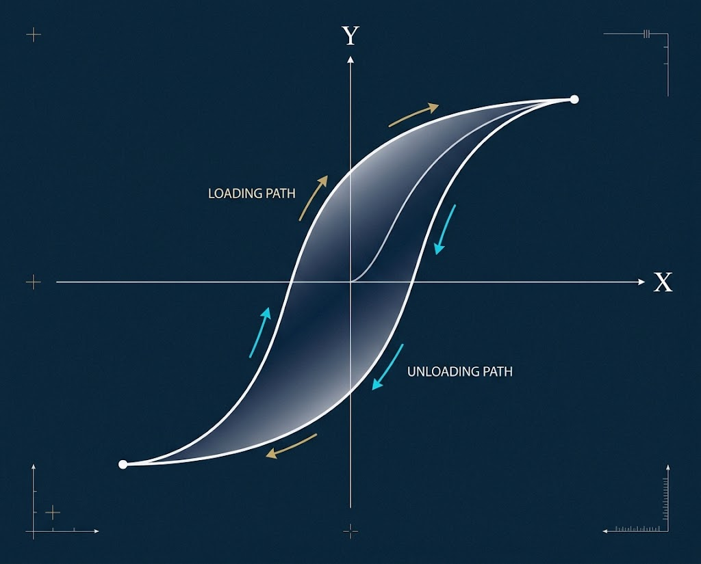

✅ دقیق و درست
هدف ایدهآل
🎯 دقیق اما نادرست
خطای سیستماتیک
🎯 درست اما نه دقیق
خطای تصادفی
❌ نه دقیق، نه درست
بدترین حالت
دقت، صحت، هیسترزیس، دریفت و بودجه عدم قطعیت

فرض کنید با یک خطکش ساده، طول یک میله را ۵ بار اندازه میگیرید. هر بار عدد متفاوتی میگیرید:
۱۰.۲، ۱۰.۱، ۱۰.۳، ۱۰.۲، ۱۰.۱ سانتیمتر
کدام عدد درست است؟
چگونه میتوان به یک نتیجهی قابل اعتماد رسید؟
هدف ایدهآل
خطای سیستماتیک
خطای تصادفی
بدترین حالت
نزدیکی نتایج به یکدیگر. اگر ۵ بار اندازه بگیرید و نتایج نزدیک هم باشند, اندازهگیری دقیق است.
📌 معیار: تکرارپذیری (Repeatability)
نزدیکی نتیجه به مقدار واقعی. اگر عدد اندازهگیریشده به مقدار حقیقی نزدیک باشد, اندازهگیری صحیح است.
📌 معیار: کالیبراسیون (Calibration)
💡 مثال روزمره: یک تیرانداز میتواند دقیق باشد (همه تیرها نزدیک هم)، اما اگر همه تیرها به یک طرف هدف بروند، صحیح نیست.
🔗 ارتباط با درس اندازهگیری:
در اندازهگیری، اگر دقت را داشته باشیم اما صحت را ندانیم,
مانند کسی هستیم که «بداند و نداند که بداند» — با کوزه آب، تشنه میمانیم.
عدم قطعیت ابزاری است که به ما میگوید چقدر «میدانیم که میدانیم».

تابع انتقال، رابطهی ریاضی بین ورودی فیزیکی و
خروجی الکتریکی سنسور است.
برای اکثر سنسورها، این رابطه خطی است:
y = mx + b
V = 10mV/°C × T
در دمای ۲۵ درجه، خروجی ۲۵۰ میلیولت است.
خروجی دیجیتال (I2C)
فشار = A + B + C (فرمول چند جملهای)
V_out = V_in × (R2 / (R1+R2))
چرخش ۰-۳۰۰ درجه → ۰-۵ ولت

کالیبراسیون فرآیند مقایسهی خروجی سنسور با یک مرجع استاندارد است تا اطمینان حاصل شود که سنسور مقادیر درست را نشان میدهد.
چرا مهم است؟
سنسورها با گذشت زمان drift (رانش) میکنند — یعنی خروجیشان از مقدار واقعی فاصله میگیرد.
📅 دورههای کالیبراسیون:
• سنسورهای آزمایشگاهی: هر ۶ ماه
• سنسورهای صنعتی: هر ۱ سال
• سنسورهای پزشکی: هر ۳ ماه
Drift (رانش) یعنی خروجی سنسور، بهطور تدریجی و بدون تغییر در ورودی, از مقدار اولیه فاصله میگیرد.
این پدیده در سنسورهای MEMS (مثل شتابسنج و ژیروسکوپ) بسیار جدی است. وقتی میخواهیم شتاب را انتگرال بگیریم تا به سرعت یا موقعیت برسیم, خطای کوچک Drift، بهصورت تصاعدی بزرگ میشود!
مثال: یک شتابسنج با Drift ۰.۰۱ g, بعد از ۱۰۰ ثانیه انتگرالگیری، خطای موقعیت ۴۹ متری پیدا میکند!
💡 راهحلها:
• کالیبراسیون دورهای
• فیلتر کالمن (Kalman Filter)
• انتگرالگیر غیرخطی (روش مقاله ما)
این مقاله، حاصل تحقیقات دکتر گوهریمنش در دوره دکتری است که در آن با استفاده از روش تاگوچی، پارامترهای بهینه یک انتگرالگیر غیرخطی برای حذف پدیده Drift در سنسورهای IMU محاسبه شده است.
🎯 هدف: حذف Drift در انتگرالگیری سیگنال شتابسنج برای کاربردهای ناوبری خودرو.
📊 نتیجه: پارامترهای بهینهشده, همگرایی سریعتر و دقیقتر از مقادیر قبلی (Wang et al.) نشان دادند.
| پارامتر | مقدار Wang | مقدار بهینهشده |
|---|---|---|
| K₁ | 2 | 2 |
| K₂ | 3 | 10 |
| α₂ | 0.1 | 1 |
| α₁ | 0.0526 | 1 |
| ε | 0.83 | 0.8 |

هیسترزیس یعنی خروجی سنسور، به مسیر رسیدن به یک مقدار بستگی دارد.
یعنی اگر مقدار ورودی را افزایش دهید و سپس کاهش دهید,
در یک نقطهی یکسان، دو خروجی متفاوت میگیرید.
📌 این پدیده در سنسورهای فشار، دما و موقعیت رایج است.
💡 مثال روزمره: یک ترازوی فنری را در نظر بگیرید. اگر وزنهای را اضافه کنید و سپس بردارید, عقربه دقیقاً به صفر برنمیگردد — این همان هیسترزیس است!
همیشه به یک سمت. با تکرار اندازهگیری از بین نمیرود. علت: کالیبراسیون غلط، خطای صفر (Zero Offset)
راهحل: کالیبراسیون
پراکندگی به هر دو سمت. با تکرار اندازهگیری کاهش مییابد. علت: نویز، ارتعاش، عوامل محیطی
راهحل: میانگینگیری
مثل سنسوری که کالیبره نشده، ذهن ما هم با پیشفرضهای فرهنگی کالیبره شده است. اگر این پیشفرضها غلط باشند، تمام قضاوتهای ما با خطای سیستماتیک همراه خواهند بود.
وقتی یک رسانه همیشه از یک زاویه به مسائل نگاه میکند، در واقع یک خطای سیستماتیک در انتقال اطلاعات دارد. مخاطب هم اگر فقط از یک منبع تغذیه کند، دیدش کالیبره نمیشود.
اگر سیستم آموزشی فقط یک روش تفکر را ترویج دهد، فارغالتحصیلان با سوگیری سیستماتیک وارد جامعه میشوند. تنوع روشهای فکری, مثل استفاده از چند سنسور، خطای سیستماتیک را کاهش میدهد.
زبان، ابزار اندازهگیری فکر است. اگر زبانی فقط مفاهیم خاصی را داشته باشد, تفکر ما محدود میشود. واژگان غنی = اندازهگیری دقیقتر واقعیت.
اگر یک نظرسنجی فقط از یک گروه خاص انجام شود، نتیجهاش خطای سیستماتیک دارد. این همان خطایی است که در علوم اجتماعی و پزشکی بسیار رخ میدهد.
توماس کوهن در «ساختار انقلابهای علمی» نشان داد که دانشمندان هم در چارچوب پارادایمهای خود گرفتارند. تغییر پارادایم = کالیبراسیون مجدد علم.
🔗 درس مهم:
همانطور که یک سنسور باید دورهای کالیبره شود,
ذهن ما هم باید دورهای بازبینی شود.
«میدانم که میدانم» یک موهبت است — اما «میدانم که نمیدانم»
اولین قدم به سوی خرد است.
وقتی یک اندازهگیری انجام میدهیم، عوامل مختلفی روی نتیجه اثر میگذارند. هر عامل یک عدم قطعیت جزئی دارد. برای محاسبهی عدم قطعیت کل, از فرمول زیر استفاده میکنیم:
u_total = √(u₁² + u₂² + u₃² + ...)
این فرمول به جمع در ریشهی مجموع مربعات (RSS) معروف است.
| منبع عدم قطعیت | مقدار (uᵢ) | uᵢ² |
|---|---|---|
| دقت سنسور LM35 | ± 0.5 °C | 0.25 |
| ADC Arduino (۱۰ بیتی) | ± 0.1 °C | 0.01 |
| نویز الکتریکی | ± 0.2 °C | 0.04 |
| عدم کالیبراسیون | ± 0.3 °C | 0.09 |
| عدم قطعیت ترکیبی | ± 0.62 °C | 0.39 |
نتیجه: دما = 25.3 ± 0.62 °C (با احتمال 95%)
| سنسور | کمیت | دقت | هیسترزیس | رزولوشن | Drift |
|---|---|---|---|---|---|
| LM35 | دما | ± 0.5 °C | کم | ۱۰ mV/°C | کم |
| DHT22 | دما + رطوبت | ± 0.5 °C / ± 2% | متوسط | ۰.۱ °C | متوسط |
| BMP280 | فشار | ± 1 hPa | کم | ۰.۰۱ hPa | کم |
| HC-SR04 | فاصله | ± 3 mm | متوسط | ۳ mm | کم |
| MPU6050 | شتاب + ژیرو | ± 0.1 g | بالا | ۱۶ بیت | بالا |
| ADXL345 | شتاب | ± 0.05 g | بالا | ۱۳ بیت | بالا |
دقت = نزدیکی نتایج به هم. صحت = نزدیکی به مقدار واقعی. این دو کاملاً مستقل هستند.
هیسترزیس: خروجی به مسیر بستگی دارد. Drift: خروجی بهتدریج از مقدار واقعی فاصله میگیرد.
u_total = √(u₁² + u₂² + ...). با این فرمول، عدم قطعیت کل اندازهگیری محاسبه میشود.
روش تاگوچی (مقاله دکتر گوهریمنش، ۲۰۱۵) ابزاری قدرتمند برای بهینهسازی و حذف Drift است.
هر گروه نقش وکیلمدافع یک سنسور فرضی را بازی میکند و باید با استدلال فنی ثابت کند سنسورشان برای یک کاربرد مشخص بهترین انتخاب است.
🎯 گروههای دیگر نقش هیئتداوران را بازی میکنند.
🏆 گروه برنده، امتیاز ویژهٔ کلاسی و نشان «Master of Sensors» دریافت میکند.
پایان فاز ۱ — آماده برای فاز ۲!
منابع پیشنهادی: Measurement Systems (Doebelin) — فصل ۳